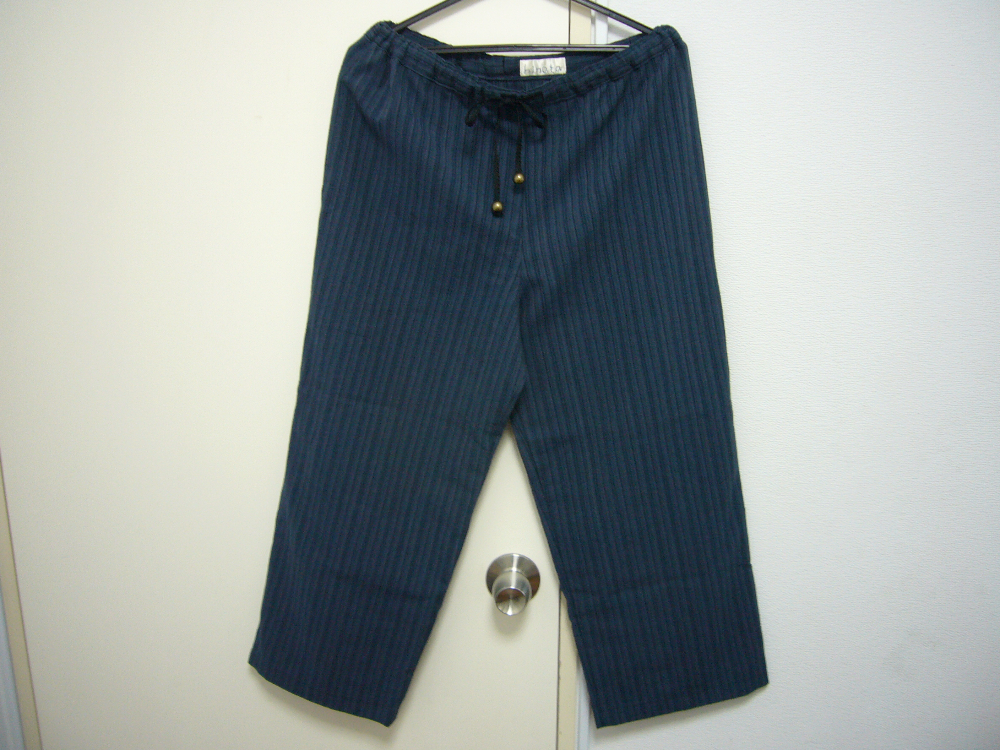
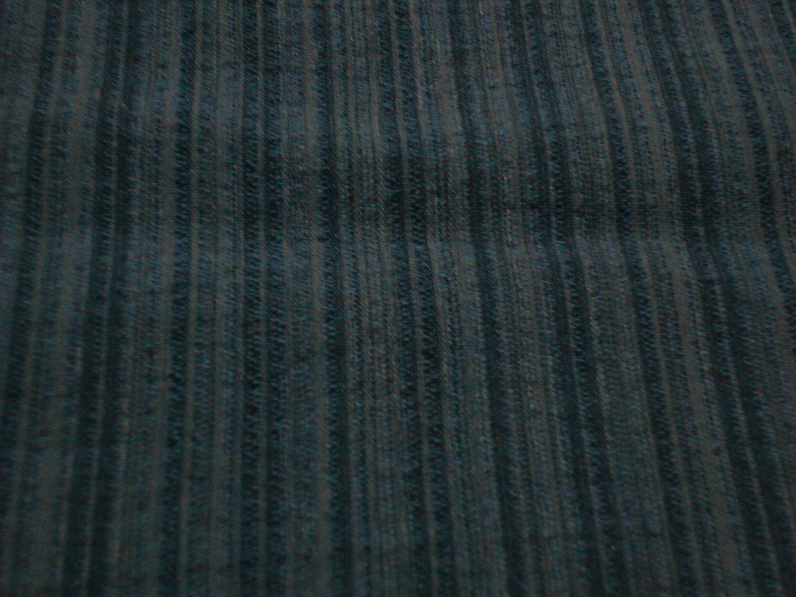
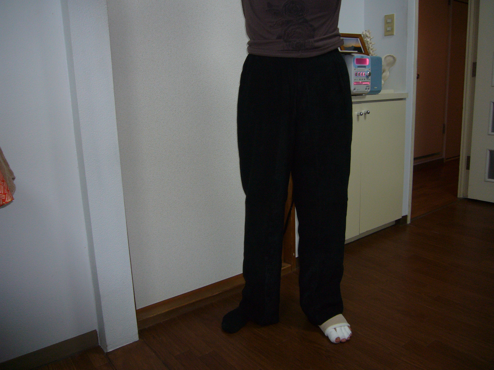
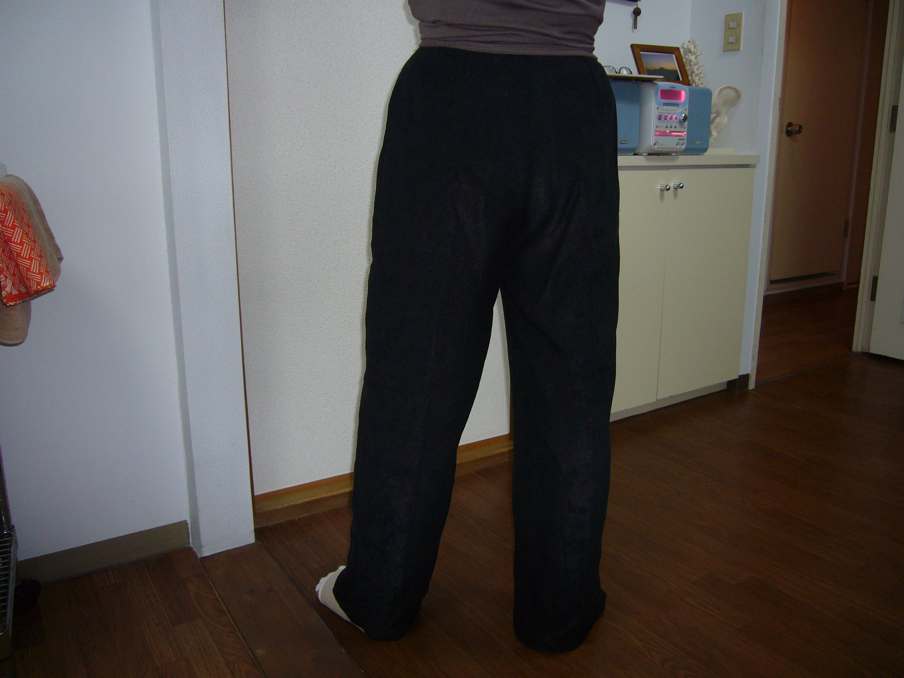

リンパドレナージ
リンパ浮腫とは 体内組織に タンパク質や水分が溜まる状態をいいます。
原因として
①原発性浮腫:リンパ節やリンパ管の発育不全によるもの
②続発性浮腫:乳ガン・子宮ガン・前立腺ガンなどの手術や放射線治療の後遺症、静脈疾患、寄生虫によるものがあります。
体内組織のリンパの流れが滞るため 腕や足がむくみ・だるさ・重さ 疲れやすさ・深部痛などを感じます。 さらに 免疫力が低下するため 炎症を起こしやすくなります。 むくみは 手術後すぐに発症する場合もあれば 5年後、10年後に発症する場合もあります。 症状はゆっくり進行しますが、適切な治療を受けなかったり、 炎症を繰り返すと象皮症にまで進むこともあります。 むくみを感じたら、早い段階で専門医の診断を受け、 専門知識と技術を習得したセラピストによる複合的理学療法を受けることが大切です。
複合的理学療法とは
『ズボン・スカートのオーダーメイド承ります』
「バンデージを巻いた時にはけるサイズのズボンがない・・ ウエストを締め付けないサイズに合わせると、他の部分が緩すぎる・・」 そこで、患者様の声を元に、当院ではオーダーメイド（仮縫いなし）の ズボンとスカートの製作を始めました。
「バンデージを巻いた時にはけるサイズのズボンがない・・ ウエストを締め付けないサイズに合わせると、他の部分が緩すぎる・・」 そこで、患者様の声を元に、当院ではオーダーメイド（仮縫いなし）の ズボンとスカートの製作を始めました。
ズボンについて
| 生 地 | 色 | デザイン | 価 格 | |
|---|---|---|---|---|
| 冬用 | ポリエステル １００％(手洗い) | 黒 | ウエストゴム・前ファスナー開き 裏地付き | １５,０００円～ |
| 夏用 | 綿 １００％ ポリエステル １００%(手洗い) | 黒・縞黒 | ウエスト総ゴム・調節ひも付き | ８,８００円～ |
スカートについて
| 生 地 | 色 | デザイン | 価 格 | |
|---|---|---|---|---|
| 冬用 | ポリエステル １００％(手洗い) | 黒 | バイヤス仕立て・脇ファスナー、裏地付き・ヒップハンガータイプ、・台形スカート・4枚はぎフレアースカート | １７,０００円～ |
| 夏用 | 綿１００％(手洗い)、ポリエステル１００%(手洗い) | 黒、黒 | バイヤス仕立て・脇ファスナー、裏地付き・ヒップハンガータイプ、・台形スカート・4枚はぎフレアースカート | １７,０００円～ |



